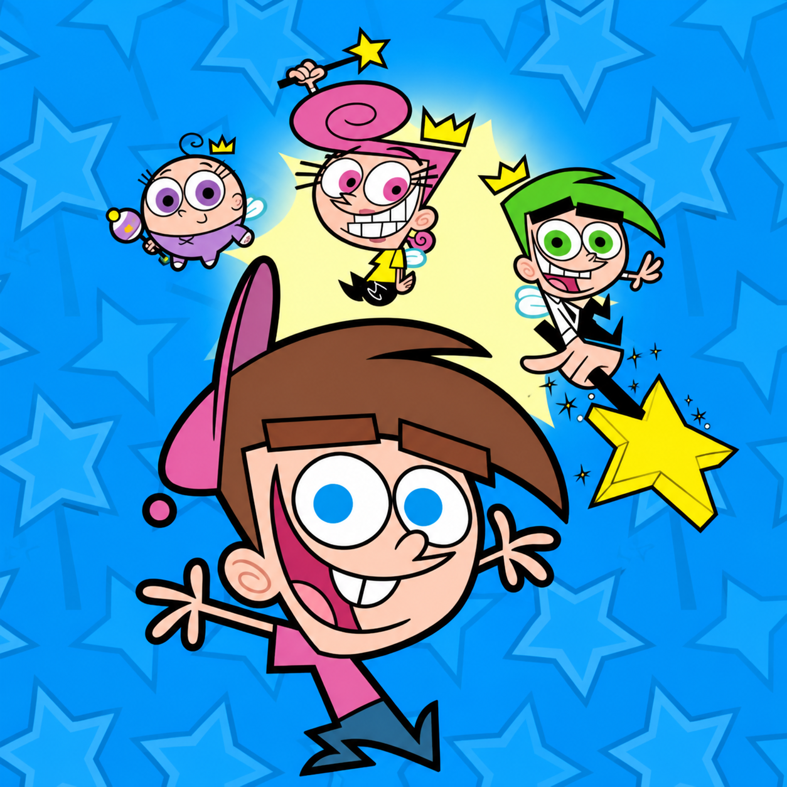

DESPUÉS DE LOS CRÉDITOSÚLTIMOS ARTÍCULOS
EN BUCLE
Canciones que cantabas sin entender (y ahora tienen mucho más sentido)
→DESPUÉS DE LOS CRÉDITOS
¿Mean Girls sigue siendo relevante? (Spoiler: sí)
→Las historias que creías conocer tienen otra cara.
De las canciones que no dejabas de escuchar a los dibujos animados que veías después de clase: aquí les damos otra vuelta.
DESCUBRE LAS HISTORIAS ↗